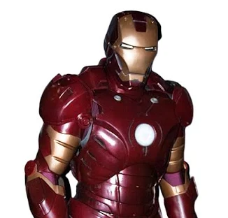

Iron Man
Genialnym wynalazcą

Iron Man to superbohater Marvela, którego prawdziwe imię to Tony Stark. Jest bogatym i bardzo zdolnym wynalazcą, który tworzy zaawansowaną zbroję. Dzięki niej może latać, walczyć i chronić innych ludzi. Tony Stark jest członkiem drużyny Avengers. Jest odważny i często wykorzystuje swój spryt, aby rozwiązywać trudne problemy. Mimo swojej pewności siebie potrafi poświęcić się dla dobra innych.
2 ciekawostki
Iron Man po raz pierwszy pojawił się w komiksie „Tales of Suspense #39” w 1963 roku.
W filmach Marvela Tony'ego Starka zagrał Robert Downey Jr.
Umiejętności
- Latanie dzięki silnikom w zbroi.
- Strzelanie wiązkami energii.
- Posiadanie nadludzkiej siły dzięki pancerzowi.
- Tworzenie zaawansowanych wynalazków.
- Szybkie analizowanie i rozwiązywanie problemów.
Cech
- odważny
- inteligentny
- pomysłowy
- pewny siebie
- zabawny
- ambitny
- pomocny
- czasami arogancki